Liquid Claims on Illiquid Assets
The Economics of Retail Access to Private Markets
Michael Ewens · Jacob FaberJuly 2026
Columbia Business School
Liquid Claims on Illiquid Assets · UBC Summer Finance Conference 2026
Private markets are entering individual portfolios
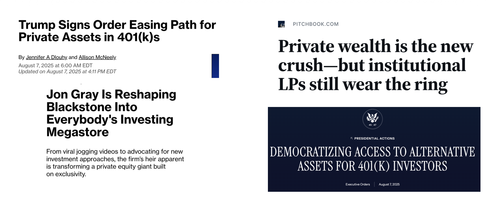
Columbia Business School
Liquid Claims on Illiquid Assets · UBC Summer Finance Conference 2026
The policy moment
The $14T defined-contribution market is the next frontier for private capital.
Trump executive order (August 2025), Blackstone and KKR’s retail push, and Department of Labor guidance.
Economists are skeptical: illiquidity, fees, and complexity.
The debate is happening without data .
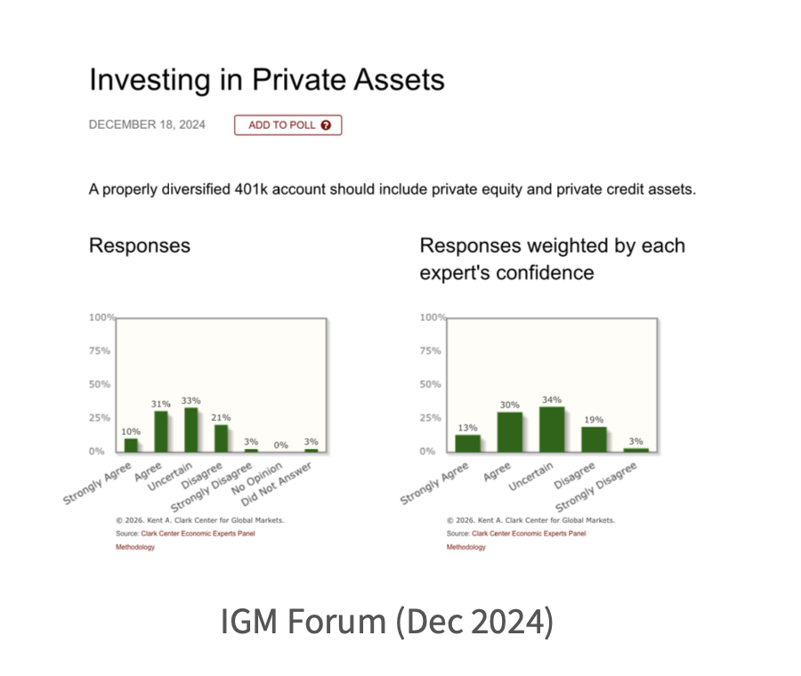
Columbia Business School
Liquid Claims on Illiquid Assets · UBC Summer Finance Conference 2026
The retail access menu
Columbia Business School
Liquid Claims on Illiquid Assets · UBC Summer Finance Conference 2026
One promise changes the investment
What must a fund do to offer periodic liquidity against assets that do not trade?
Retail-access wrapper Periodic liquidity + recurring NAV on nontraded assets
↓
Liquidity sleeve Keep cash and tradable assets ready for repurchases.
Deployment lag Convert continuous subscriptions into private positions.
Recurring price Mark assets that do not trade continuously.
Portfolio selection Favor assets capable of supporting recurring liquidity.
Retail eligibility and regulation
→
Altered manager incentive contract
Columbia Business School
Liquid Claims on Illiquid Assets · UBC Summer Finance Conference 2026
The wrapper is part of the investment
How much institutional private-market exposure survives the retail wrapper, and why?
Closest contemporaneous work
Pegoraro, Shive, and Zambrana (2026): Interval-fund performance relative to actively managed ETFs.Glover, Halliwell, and Silva (2026): Closed-end funds-of-private-funds: growth, stated fees, benchmark performance, and accreditation changes.Fang, Goldstein, and Zeng (2026): Redemption fragility and portfolio responses in semi-liquid private-credit funds.
What’s new? Strategy-matched institutional benchmarking plus a decomposition that opens the wrapper: holdings, valuation, retail ownership, deployment, selection, and incentives.
Columbia Business School
Liquid Claims on Illiquid Assets · UBC Summer Finance Conference 2026
Liquidity transformation carries structural costs
The access contract changes what is held, when it is deployed, how it is priced, and how the manager is paid.
1
Meaningful private exposure survives The whole fund trails its matched private-market benchmark by 1.22% per quarter.
2
Fees, cash, and public holdings explain most of the gap After accounting for them, the remaining gap is 0.31% per quarter.
3
Mechanisms explain why exposure differs Liquidity management, deployment, valuation, and selection help explain why the loading is below one.
4
Redemption sensitivity is similar across channels Retail-facing and restricted channels respond similarly in the observed sample.
Columbia Business School
Liquid Claims on Illiquid Assets · UBC Summer Finance Conference 2026
Benchmark: what exposure survives?
Benchmark: what exposure survives?
Accounting: what explains the wedge?
Operations: why does exposure differ?
Access rules: what changes for managers?
Columbia Business School
Liquid Claims on Illiquid Assets · UBC Summer Finance Conference 2026
The benchmark is what institutions receive
What should a retail-access vehicle be compared with?
What funds promise
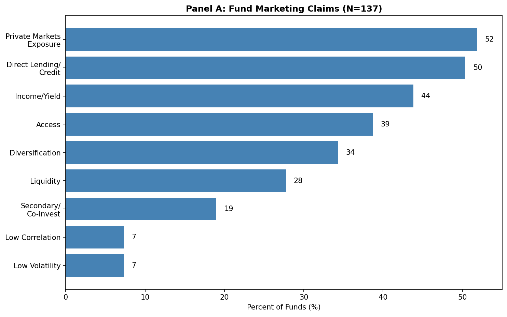
Matched alternative
Net-of-fee returns from institutional drawdown funds, matched to each vehicle’s stated strategy.
Private credit MSCI US Private Credit
Private equity MSCI US Buyout
Venture capital MSCI US Venture Capital
Why not the stated benchmark?
Funds beat leading loan or bond benchmarks 80–100% of the time, but only 30% beat the S&P 500 or MSCI ACWI.
Columbia Business School
Liquid Claims on Illiquid Assets · UBC Summer Finance Conference 2026
Funds underperform drawdown benchmarks
How much institutional private-market performance survives the wrapper?
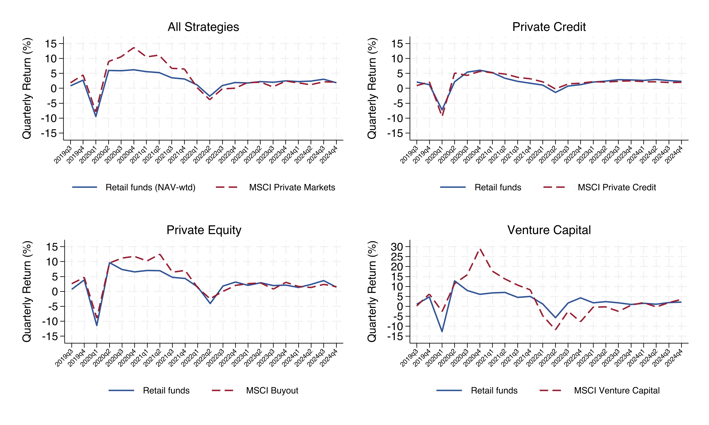
−1.22% All strategies
−0.30% Private credit
−1.15% Private equity
−1.61% Venture capital
Columbia Business School
Liquid Claims on Illiquid Assets · UBC Summer Finance Conference 2026
What explains the gap?
Measured return wedges
Components of the accounting decomposition
Retail fees
Cash and STIV drag
Drawdown-beta shortfall
Offsetting gross retail premium and public-market contribution
Mechanisms and risk channels
Mechanism and risk evidence
Portfolio composition and deployment speed
Model-based valuation and timing
Selection toward earlier distributions
Redemption capacity and manager incentives
Fees and cash measure the price of access. The drawdown-beta term shows whether the wrapper changes the exposure delivered.
Columbia Business School
Liquid Claims on Illiquid Assets · UBC Summer Finance Conference 2026
Benchmark: what exposure survives?
Accounting: what explains the wedge?
Operations: why does exposure differ?
Access rules: what changes for managers?
Columbia Business School
Liquid Claims on Illiquid Assets · UBC Summer Finance Conference 2026
Private exposure is meaningful and diluted
After removing fees and cash, how much drawdown exposure remains?
Fees: add back observed retail expenses.Cash drag: remove cash and STIV returns and rescale the non-cash sleeve.Public markets: estimate the public-market loading.Private markets: estimate the matched MSCI drawdown loading.
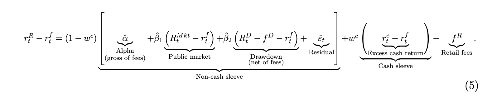
Table 6. Fee- and liquidity-adjusted return model
All Credit PE VC
Alpha 0.005 −0.002 0.009 0.010 (0.007) (0.005) (0.007) (0.008) Market 0.182** 0.124** 0.027 0.377** (0.070) (0.046) (0.074) (0.131) Private benchmark 0.466*** 1.245*** 0.593*** 0.160 (0.076) (0.239) (0.097) (0.101) Cash + STIV share 7.63% 4.67% 9.41% 9.41% Annual retail expense ratio 2.86% 3.32% 2.58% 2.58% Observations 24 24 24 24 Adjusted R² 0.814 0.889 0.733 0.689
Alpha is near zero in every strategy: little of the gap remains unexplained once exposure is modeled.
Private-benchmark loading: credit 1.245, PE 0.593, VC 0.160. The VC estimate is imprecise.
PE and VC share the pooled non-credit cash and fee calibration.
Columbia Business School
Liquid Claims on Illiquid Assets · UBC Summer Finance Conference 2026
The beta shortfall is the largest accounting wedge
Which measured components account for the retail-minus-MSCI return gap?
Gross retail premium: +46 bp/q Positive return above the model’s factor exposures offsets part of the 71 bp retail fee.
Drawdown-beta shortfall: −136 bp/q The larger wedge comes from less than one-for-one exposure to the private benchmark.
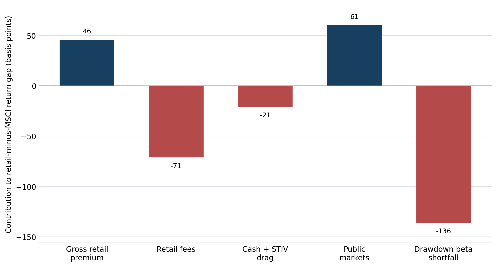
Intuition: like an index fund that is only 47% invested in its index, these vehicles mechanically trail when the private benchmark rises, even if alpha is zero.
Columbia Business School
Liquid Claims on Illiquid Assets · UBC Summer Finance Conference 2026
Return of the private sleeve
Calculating the return on the private sleeve: add back expenses and remove the contributions from cash and priced public holdings.
Return on the private sleeve
Net fund return + expenses − cash contribution − priced-public contribution
1 − cash share − priced-public share
The resulting sleeve is 99% classified private assets.
This is not a return built security by security.
−120 bp/q whole-fund gap to MSCI
→
−31 bp/q private-sleeve gap
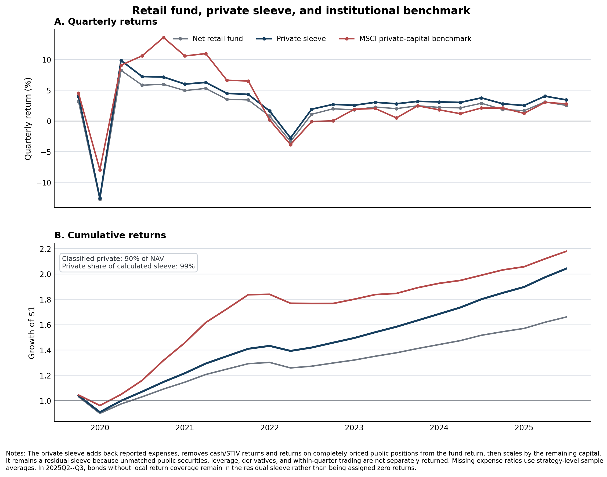
May contain unmatched public positions, leverage, derivatives, and within-quarter trading. Sample: 2019Q4–2025Q3.
Columbia Business School
Liquid Claims on Illiquid Assets · UBC Summer Finance Conference 2026
Benchmark: what exposure survives?
Accounting: what explains the wedge?
Operations: why does exposure differ?
Access rules: what changes for managers?
Columbia Business School
Liquid Claims on Illiquid Assets · UBC Summer Finance Conference 2026
What do these funds hold?
Columbia Business School
Liquid Claims on Illiquid Assets · UBC Summer Finance Conference 2026
Recurring liquidity requires a model-based NAV
At what price do investors subscribe and redeem when the underlying assets do not trade?
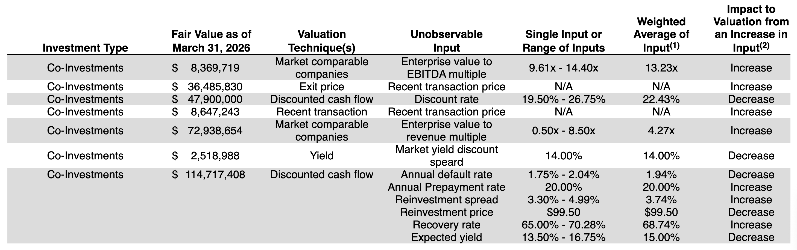
Stepstone Private Markets, 2025 NCSR
Share of funds using method / share of Level-3 dollars valued with method
Private credit Private equity Private funds All
Market approach 76 / 22 88 / 57 71 / 41 72 / 33 Income approach 31 / 48 12 / 4 22 / 5 23 / 32 Discounted cash flow 62 / 10 24 / 5 22 / 30 40 / 10 Recent transaction 56 / 1 59 / 6 44 / 6 52 / 3 Mean techniques per fund 3.9 2.8 2.8 3.2 Funds 55 17 45 136
Columbia Business School
Liquid Claims on Illiquid Assets · UBC Summer Finance Conference 2026
Model-based marks move slowly
We compare changes in model inputs with changes in their public-market equivalents.
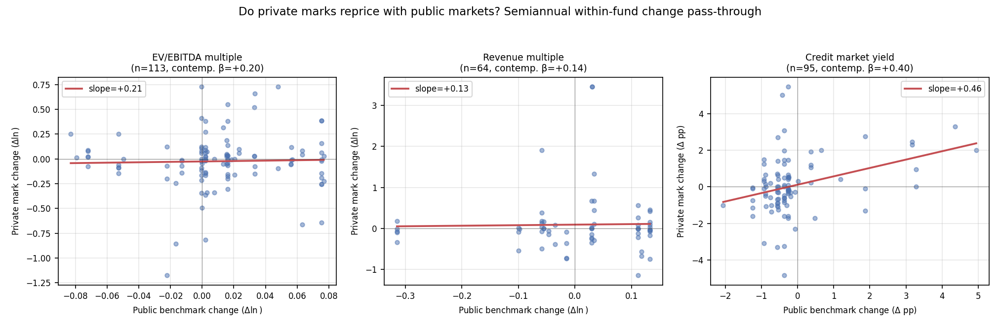
Semiannual within-fund change in a private mark versus its matched public benchmark; line = pass-through slope.
Investors transact at a recurring NAV that only partially reflects contemporaneous public-market moves.
Columbia Business School
Liquid Claims on Illiquid Assets · UBC Summer Finance Conference 2026
Fee waivers partly subsidize observed costs
2.86% annual retail-access expense calibration
1.81% annual drawdown fee assumption
Fees subtract 71 bp per quarter .
The drawdown-exposure shortfall is larger: 136 bp per quarter .
74% of funds report an expense waiver or cap.
Columbia Business School
Liquid Claims on Illiquid Assets · UBC Summer Finance Conference 2026
Some operating costs decline with scale
Which explicit costs fall as the industry grows?
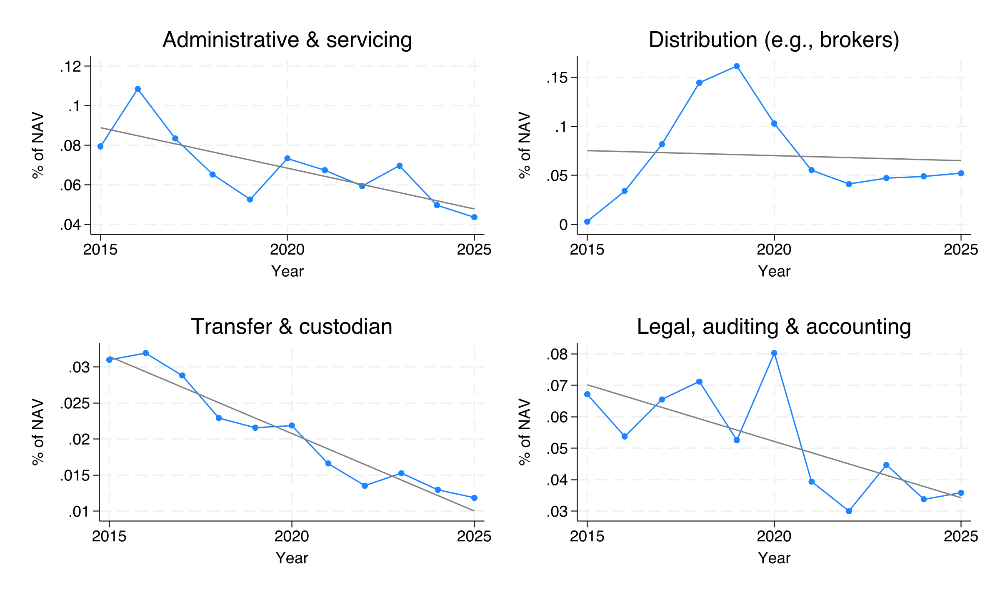
These scale economies reveal potential fee dynamics for 401(k)s.
Columbia Business School
Liquid Claims on Illiquid Assets · UBC Summer Finance Conference 2026
Retail does not amplify redemption sensitivity
Does opening access make redemption demand more performance-sensitive?
In 2025Q4, 19 of 78 interval funds had demand above the cap, representing 21% of interval-fund NAV.
Difference in lagged-return sensitivity Estimate
Institutional vs. direct retail −0.008(0.077) Below- vs. above-median retail access −0.172(0.115)
Neither difference is statistically distinguishable from zero.
Columbia Business School
Liquid Claims on Illiquid Assets · UBC Summer Finance Conference 2026
Deployment lags investor exposure
How quickly can continuous inflows become private assets?
Funds offer immediate exposure to private markets.
But there are lags.
New funds take 1–2 years to reach steady-state private exposure.
Perhaps explained by high underwriting hurdles or too few suitable deals.
Speed to private allocation after net inflow shock
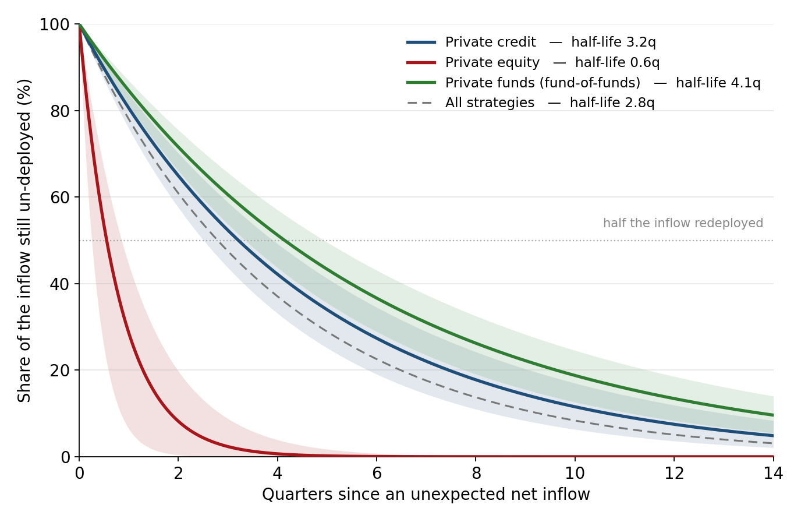
Columbia Business School
Liquid Claims on Illiquid Assets · UBC Summer Finance Conference 2026
Selection favors earlier distributions
Does the need for liquidity affect which private investments are selected?
Match underlying fund positions from N-PORT to PitchBook.
Compare held drawdown funds with similar unheld funds, conditional on vintage, strategy, and manager.
Difference for funds held by retail-access vehicles
Year 3 Year 4 Year 5
IRR difference (pp) −1.22 −1.30 2.33 (2.68) (2.32) (1.93) DPI difference 0.095** 0.016 0.044 (0.040) (0.055) (0.062)
Preferred specification includes vintage × category and manager fixed effects and excludes secondary purchases.
Liquidity tilt inside the private book
Similar IRR + higher early DPI → capital comes back sooner.
Consistent with selecting more liquid assets within an otherwise illiquid portfolio.
Rules temper selection
65%
have a 17d-1 co-investment exemption, permitting access to affiliated deals subject to allocation procedures.
Columbia Business School
Liquid Claims on Illiquid Assets · UBC Summer Finance Conference 2026
Benchmark: what exposure survives?
Accounting: what explains the wedge?
Operations: why does exposure differ?
Access rules: what changes for managers?
Columbia Business School
Liquid Claims on Illiquid Assets · UBC Summer Finance Conference 2026
Retail eligibility shapes feasible incentive contracts
Nearly all drawdown alternative funds charge incentive pay. Alignment is central to the institutional contract.
36% of retail-access funds report incentive pay; 51% report portfolio-manager ownership in 2024.
Fund manager incentive pay
Income Gains / NAV
Funds 34 25 Median contractual rate 15.0% 10.0% Share with hurdle 97% 20% Loss recovery / high-water 3% 88% Share private credit 100% 12% Share open to retail investors 68% 0%
Funds that allow non-accredited investors cannot charge incentive fees on NAV.
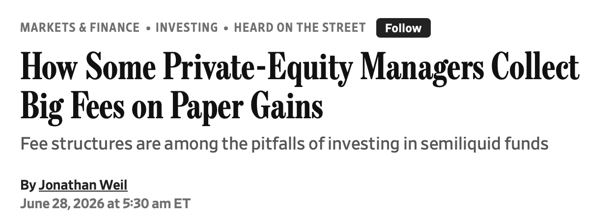
Columbia Business School
Liquid Claims on Illiquid Assets · UBC Summer Finance Conference 2026
Liquidity transformation carries structural costs
What survives: meaningful exposure, but the whole fund trails its drawdown benchmark by 1.22% per quarter.Where the gap sits: after adding back expenses and removing cash and priced public holdings, the remaining-portfolio gap is 0.31% per quarter.What the model says: alpha is near zero, so the gap mainly reflects the exposure delivered rather than unexplained underperformance.Why exposure differs: composition, deployment, valuation, and selection help explain a drawdown loading below one; their separate return effects are not yet measured.Redemption behavior: retail access is not associated with greater performance sensitivity in this sample. Severe stress remains untested.
What does this mean for 401(k)s?
Scale will likely help fees, but selection, deployment, and valuation are currently unsolved.
Columbia Business School
Liquid Claims on Illiquid Assets · UBC Summer Finance Conference 2026
Columbia Business School
Liquid Claims on Illiquid Assets · UBC Summer Finance Conference 2026